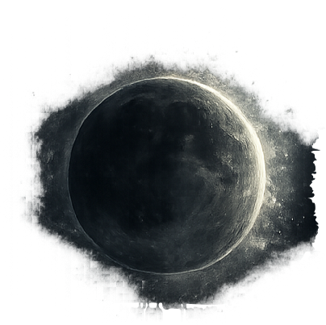

VirtualSky is an interactive, browser-based planetarium developed by Las Cumbres Observatory that allows you to explore the night sky in real time from any location on Earth. It displays stars, constellations, planets, deep-sky objects.
Planetarium (VirtualSky)Loading…